The purpose of this plugin is to provide a method to control QLC+ widgets
using Arduino devices connected by USB.
This is highly-technical setup, it is assumed the
reader is familiar with QLC+, inputs, widgets, and also arduino C programming and a bit of hardware hacking.
An Arduino microcontroller reads physical input (e.g. potentiometers, switches, etc.).
Example (Arduino C Code):
void setup()
{
Serial.begin(115200);
}
void loop()
{
int knob = analogRead(A0);
knob = map(knob, 0, 1023, 0, 255); // map value from Arduino's 0-1023 range to QLC/DMX's 0-255 range.
}
Arduino sends a valid OSC frame to the PC over serial connection (see complete code in the next section):
void loop()
{
int knob = analogRead(A0);
knob = map(knob, 0, 1023, 0, 255);
// QLC's will auto-detect this OSC input as "/mydevice/knob/1" with the
// integer value read from the arduino analog pin:
send_osc_simple_control_int("/mydevice/knob/", 1, knob ) ;
}
After every OSC frame, the Arduino sends a fixed
4-byte marker indicating the end-of-frame.
This is
required due to protocol differences between UDP
(which is frame-aware, every datagram is a single
frame) and tty/serial devices (which are one
continuous stream).
The Arduino can send multiple OSC frames, as long as there's
an end-of-frame marker after each one, e.g.:
void loop()
{
while (1) {
int knob1 = analogRead(A0);
int knob2 = analogRead(A1);
int slider1 = analogRead(A2);
int switch1 = digitalRead(2);
int switch2 = digitalRead(3);
knob1 = map(knob1, 0, 1023, 0, 255);
knob2 = map(knob2, 0, 1023, 0, 255);
slider1 = map(slider1, 0, 1023, 0, 255);
// hardware switches are either on or off, translate them to 0 or 255 for QLC.
switch1 = (switch1) ? 255 : 0;
switch2 = (switch2) ? 255 : 0;
send_osc_simple_control_int("/mydevice/knob/", 1, knob1 ) ;
send_osc_bridge_frame_marker();
send_osc_simple_control_int("/mydevice/knob/", 2, knob2 ) ;
send_osc_bridge_frame_marker();
send_osc_simple_control_int("/mydevice/slider/", 1, slider1 ) ;
send_osc_bridge_frame_marker();
send_osc_simple_control_int("/mydevice/switch/", 1, switch1 ) ;
send_osc_bridge_frame_marker();
send_osc_simple_control_int("/mydevice/switch/", 2, switch2 ) ;
send_osc_bridge_frame_marker();
delay(10);
}
}
In QLC's inputs/outputs tab,
after setting OSC:127.0.0.1 as universe 1 input,
and Serial-OSC-Bridge as universe 2 input,
clicking on the "profiles" tab for universe 1 and clicking "add":
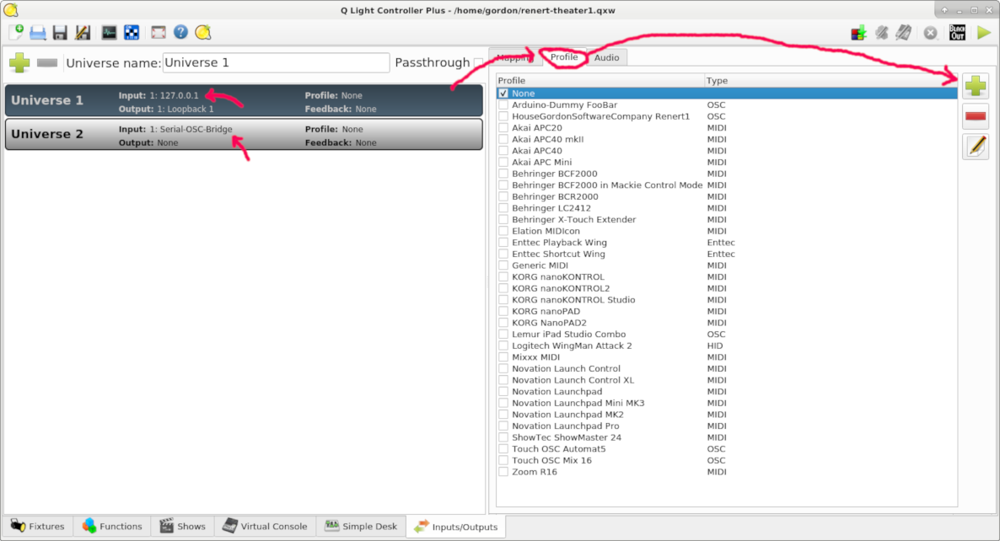
The above Arduino code will result in the following auto-detected channels:
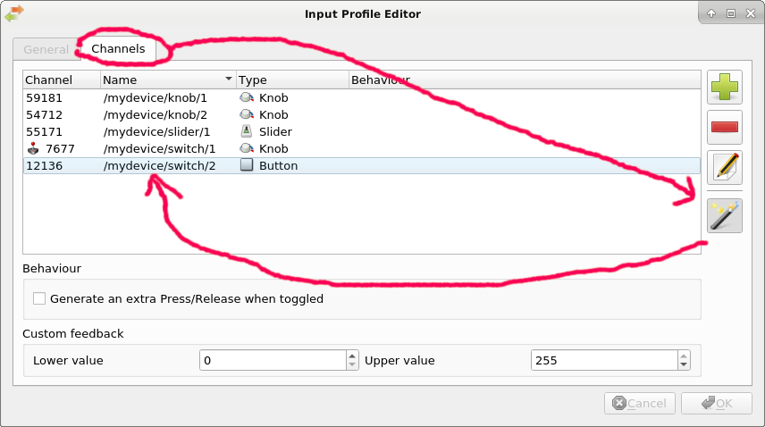
Then in QLC's Virtual Console, add a new widget
and double-click on it to edit the its properties:
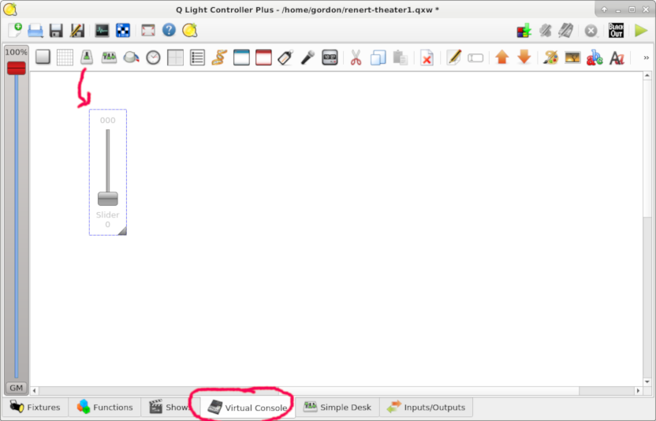
Click "choose" to select the OSC input (as defined in the "profile", above):
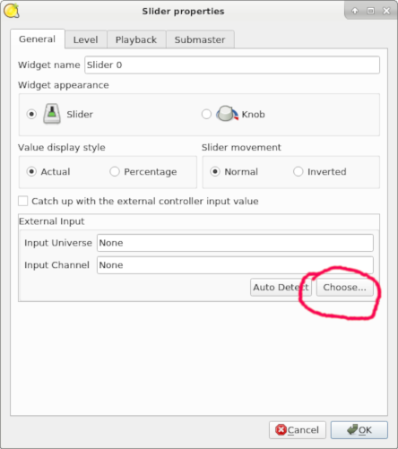
Then select the desired OSC input channel from the list:
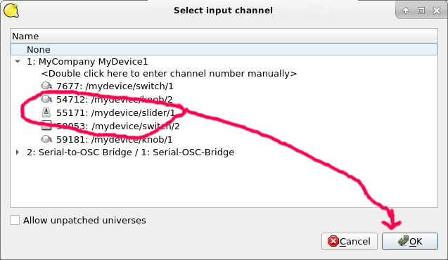
The widget will then be controlled by the changing values sent by the arduino:
/*
Arduino Code Example for the Serial-OSC-Bridge Plugin for QLC+
Copyright (c) House Gordon Software Company LTD
Licensed under the Apache License, Version 2.0 (the "License");
you may not use this file except in compliance with the License.
You may obtain a copy of the License at
http://www.apache.org/licenses/LICENSE-2.0.txt
Unless required by applicable law or agreed to in writing, software
distributed under the License is distributed on an "AS IS" BASIS,
WITHOUT WARRANTIES OR CONDITIONS OF ANY KIND, either express or implied.
See the License for the specific language governing permissions and
limitations under the License.
*/
//Uncomment this during debugging, this will result in ASCII OSC frames
//sent over the serial port (viewable in Arduino Studio Serial Monitor)
//but not usable by QLC.
//#define DEBUG_ASCII_COMMUNICATION
#define BAUD_RATE 115200
void send_osc_bridge_frame_marker()
{
#ifndef DEBUG_ASCII_COMMUNICATION
static const unsigned char frame_marker[4] = {0x89, 0x98, 0x12, 0xAB} ;
Serial.write(frame_marker, 4);
#endif
}
// "num_sent" is the number of bytes ALREADY sent.
// e.g. if num_sent==11 , this function will send one additional NUL byte
// resulting in a 12 byte message (4-byte aligned in total).
void send_osc_zero_padding(unsigned int num_sent)
{
// Fall-through here is intentional, similar to https://en.wikipedia.org/wiki/Duff%27s_device .
// e.g. if the remainder is 1, three NUL bytes will be sent.
switch (num_sent % 4)
{
case 1: Serial.write(0x00);
/* FALLTHROUGH */
case 2: Serial.write(0x00);
/* FALLTHROUGH */
case 3: Serial.write(0x00);
}
}
void send_osc_simple_control_int(const String& address_prefix,
int control_number,
unsigned int value)
{
// Send the OSC Address - no sanity checks on the validity of the address...
size_t i = Serial.print(address_prefix);
i += Serial.print(String(control_number));
#ifndef DEBUG_ASCII_COMMUNICATION
send_osc_zero_padding(i);
#endif
// Send the OSC type.
//NOTE: "i/integer" in OSC protocol is a 32-bit integer
Serial.print(",i");
#ifndef DEBUG_ASCII_COMMUNICATION
send_osc_zero_padding(2);
#endif
#ifdef DEBUG_ASCII_COMMUNICATION
Serial.print(",value = ");
Serial.println(value);
#else
// Send the value.
// As AVR arduino 'int' is 16-bit, start with two NUL bytes to pad to 32 bit.
send_osc_zero_padding(2);
byte hi = value / 256;
byte lo = value % 256;
Serial.write(hi);
Serial.write(lo);
#endif
}
void setup()
{
Serial.begin(BAUD_RATE);
while (!Serial) {
; // wait for serial port to connect. Needed for native USB port only
}
pinMode(2, INPUT_PULLUP);
pinMode(3, INPUT_PULLUP);
}
void loop()
{
int prev_knob1;
int prev_knob2;
int prev_slider1;
int prev_switch1;
int prev_switch2;
while (1) {
int knob1 = analogRead(A0);
int knob2 = analogRead(A1);
int slider1 = analogRead(A2);
int switch1 = digitalRead(2);
int switch2 = digitalRead(3);
knob1 = map(knob1, 0, 1023, 0, 255);
knob2 = map(knob2, 0, 1023, 0, 255);
slider1 = map(slider1, 0, 1023, 0, 255);
// hardware switches are either on or off, translate them to 0 or 255 for QLC.
switch1 = (switch1) ? 255 : 0;
switch2 = (switch2) ? 255 : 0;
if (knob1 != prev_knob1) {
send_osc_simple_control_int("/mydevice/knob/", 1, knob1 ) ;
send_osc_bridge_frame_marker();
prev_knob1 = knob1 ;
}
if (knob2 != prev_knob2) {
send_osc_simple_control_int("/mydevice/knob/", 2, knob2 ) ;
send_osc_bridge_frame_marker();
prev_knob2 = knob2 ;
}
if (slider1 != prev_slider1) {
send_osc_simple_control_int("/mydevice/slider/", 1, slider1 ) ;
send_osc_bridge_frame_marker();
prev_slider1 = slider1 ;
}
if (switch1 != prev_switch1) {
send_osc_simple_control_int("/mydevice/switch/", 1, switch1 ) ;
send_osc_bridge_frame_marker();
prev_switch1 = switch1 ;
}
if (switch2 != prev_switch2) {
send_osc_simple_control_int("/mydevice/switch/", 2, switch2 ) ;
send_osc_bridge_frame_marker();
prev_switch2 = switch2 ;
}
delay(10);
}
}
Configuration
Open the Serial-OSC-Bridge plugin configuration screen:
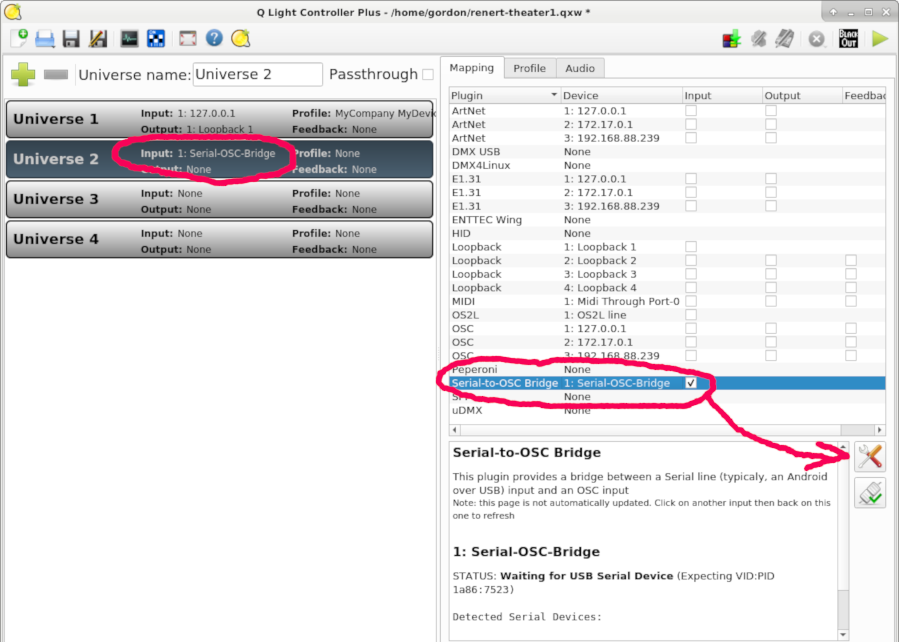
The input tab has options to set the USB VendorID and Product ID for the arduino device you are using,
and the serial baud rate. In some case, you might prefer to read from a hard-coded serial device file name
instead of auto-detecting a USB device:
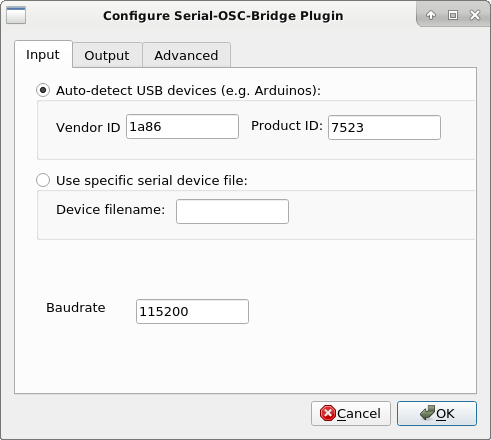
The output tab allows changing the destination universe number (this is the QLC
universe in which the OSC plugin is running on 127.0.0.1):
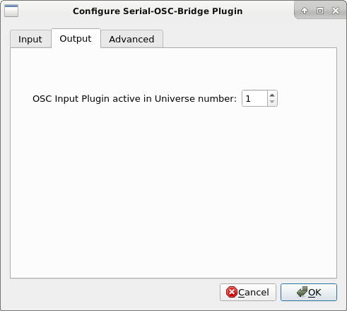
The advanced tab allows changing more options, for example you can
change the 4-byte values of the end-of-frame marker sent by the arduino.
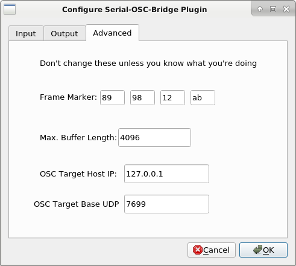
Operation and Troubleshooting
When the Serial-OSC-Bridge plugin is enabled, its status window will show
the "health" of the setup (whether it's working or not).
Initially, it will show "invalid configuration" - indicating that the
USB VendorID/ProductID are not set:
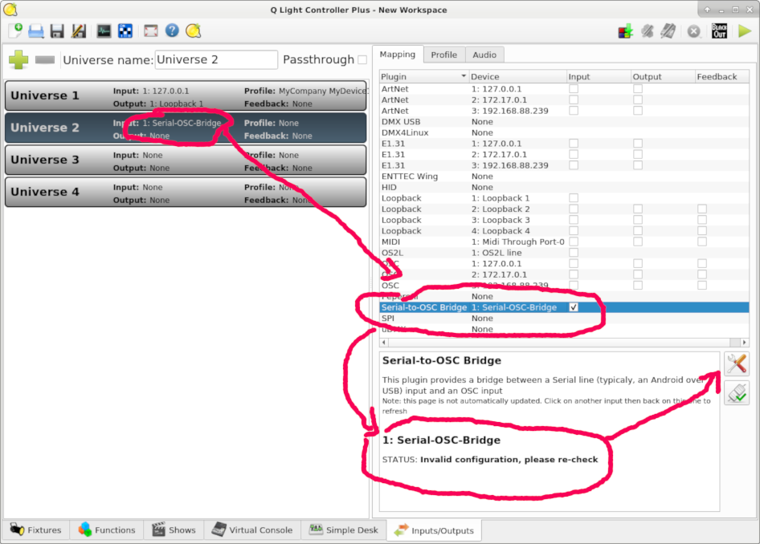
Click on the "Configuration" button to set the USB vendor/product ID.
It is fine to enter dummy values (e.g. "1234" and "5678") if the actual values are not known:
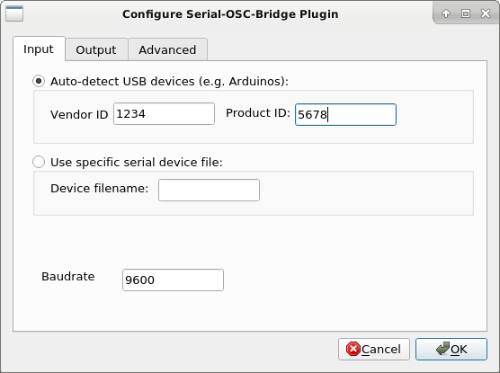
The plugin will then show the detected devices:
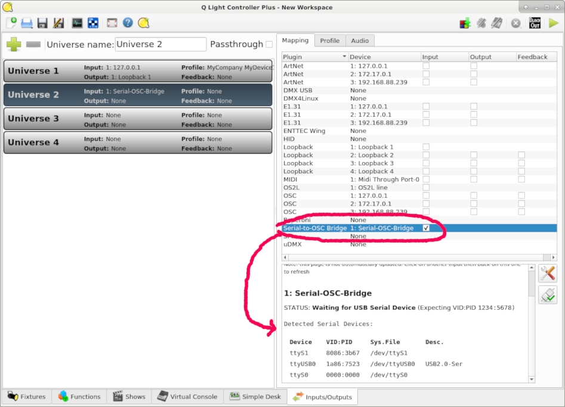
In the screenshot above we can see the detected Arduino device at /dev/ttyUSB0
with VID:PID of 1a86:7523.
Open the plugin "configuration" page again, and enter these values (also - change the baudrate according to your arduino code):
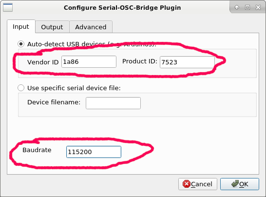
Once the plugin detects the correct USB-serial device, it will open it and starts reading OSC data from it:
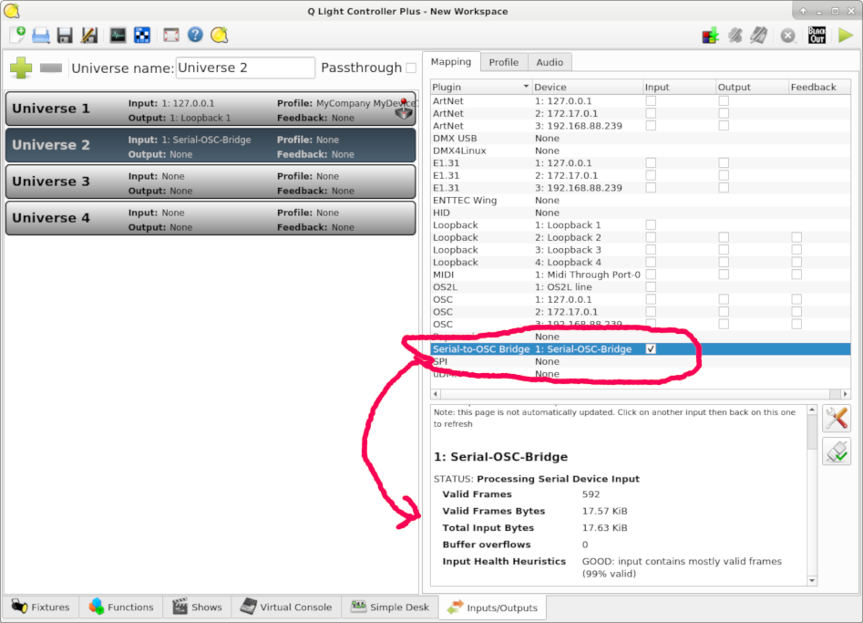
This status provides some troubleshooting hints when developing new Arduino software:
Total input bytes
If this value is very low (or zero), it means the serial device is not sending any data at all.
Valid Frames + Valid Frame Bytes
If these values are low (compared to the total input bytes), it means the device is not sending valid
"end-of-frame" marker (4 bytes).
Note that the plugin does not perform any validation on the content of the OSC frames themselves.
Buffer overruns
If this value is not zero, it means that the sent frames (either valid or not) between every OSC end-of-frame marker
is too large.
By default the maximum size is 4096 bytes which should be plenty enough for typical OSC frames.
Real World Example
The following proof-of-concept prototype was developed by House Gordon Software Company LTD (the developer of this plugin).
The design and code below are released under the Apache 2.0 license (same as QLC+).